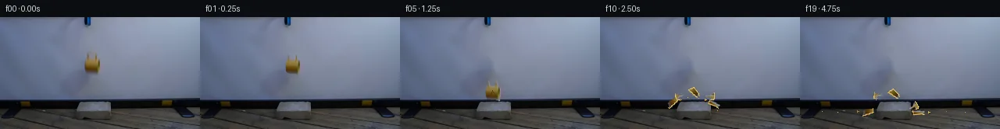

![首帧]()

Round 00
2026-11-05T05:24:56.498023+00:00像素候选变化代码 +272/−0inspection 更新
pixels 72aaa35fe3555068 · code 297ee60d57632404
查看本轮 generate.py 真实 diff
--- previous/generate.py +++ current/generate.py @@ -0,0 +1,272 @@ +#!/usr/bin/env python3 +"""Generate a deterministic 20-frame ceramic mug drop from first_frame.png.""" + +from pathlib import Path +import math + +import cv2 +import numpy as np +from PIL import Image, ImageDraw, ImageFont + +from artifact_io import save + + +ROOT = Path(__file__).resolve().parent +W, H = 256, 144 +N = 20 + + +def shadow_ellipse(rgb, box, strength, blur=2.2): + """Darken pixels under a soft analytic ellipse.""" + matte = np.zeros((H, W), np.uint8) + x0, y0, x1, y1 = [int(round(v)) for v in box] + cv2.ellipse( + matte, + ((x0 + x1) // 2, (y0 + y1) // 2), + (max(1, (x1 - x0) // 2), max(1, (y1 - y0) // 2)), + 0, + 0, + 360, + 255, + -1, + ) + matte = cv2.GaussianBlur(matte, (0, 0), blur) + amount = (matte.astype(np.float32) / 255.0 * strength)[..., None] + return np.clip(rgb.astype(np.float32) * (1.0 - amount), 0, 255).astype(np.uint8) + + +def paste_rgba(dst, layer, xy): + """Alpha composite a small RGBA ndarray, safely clipped to the canvas.""" + x, y = [int(round(v)) for v in xy] + lh, lw = layer.shape[:2] + x0, y0 = max(0, x), max(0, y) + x1, y1 = min(W, x + lw), min(H, y + lh) + if x0 >= x1 or y0 >= y1: + return + src = layer[y0 - y : y1 - y, x0 - x : x1 - x] + alpha = src[:, :, 3:4].astype(np.float32) / 255.0 + area = dst[y0:y1, x0:x1].astype(np.float32) + dst[y0:y1, x0:x1] = np.clip(src[:, :, :3] * alpha + area * (1.0 - alpha), 0, 255).astype(np.uint8) + + +def rotate_rgba(layer, angle): + im = Image.fromarray(layer, "RGBA") + return np.asarray(im.rotate(angle, resample=Image.Resampling.BICUBIC, expand=True)) + + +def make_clean_background(source): + """Remove only the suspended mug and its soft local shadow by inpainting.""" + mask = np.zeros((H, W), np.uint8) + # Broad enough to include the blurred boundary and underside shadow. + cv2.rectangle(mask, (105, 42), (132, 79), 255, -1) + return cv2.cvtColor( + cv2.inpaint(cv2.cvtColor(source, cv2.COLOR_RGB2BGR), mask, 5, cv2.INPAINT_TELEA), + cv2.COLOR_BGR2RGB, + ) + + +def extract_mug(source, clean): + """Recover an antialiased RGBA layer from the warm mug pixels.""" + x0, y0, x1, y1 = 102, 40, 136, 80 + src = source[y0:y1, x0:x1].copy() + bg = clean[y0:y1, x0:x1] + diff = np.max(np.abs(src.astype(np.int16) - bg.astype(np.int16)), axis=2) + r, g, b = [src[:, :, i].astype(np.int16) for i in range(3)] + yy, xx = np.mgrid[0 : y1 - y0, 0 : x1 - x0] + warm = (r > b + 4) & (g > b - 2) & (diff > 5) + locality = (xx >= 4) & (xx <= 29) & (yy >= 3) & (yy <= 36) + core = (warm & locality).astype(np.uint8) * 255 + # Close tiny holes in the ceramic while preserving the open mouth. + core = cv2.morphologyEx(core, cv2.MORPH_CLOSE, np.ones((2, 2), np.uint8)) + fringe = cv2.GaussianBlur(core, (0, 0), 0.72) + alpha = np.maximum(core, (fringe.astype(np.float32) * 0.76).astype(np.uint8)) + alpha[(diff < 3) & (core == 0)] = 0 + return np.dstack([src, alpha]), (x0, y0) + + +def cut_fragments(mug): … diff truncated; 185 more lines …